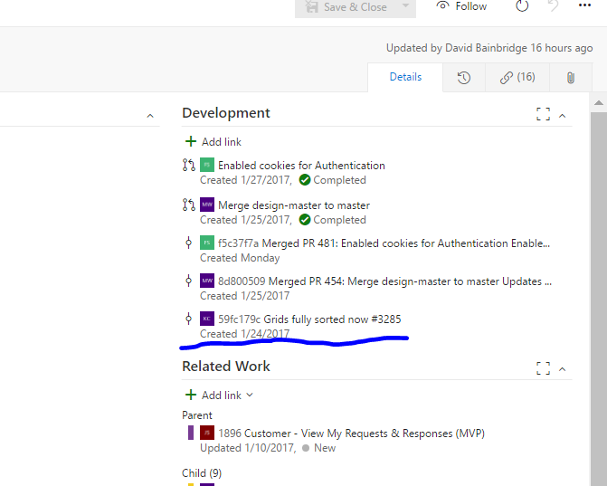

All About That Git
Terminology
Git has a lot of terms that might seem confusing…
- Commit
- Rebase
- Pull
- Divergence
- Remote
- Origin
- Merge
- HEAD
Commit
What a commit isn't…
- A save of the entire file
- Available immediately
What a commit is…
- A collection of changes
- A snapshot of time
- Local to your repository
You will often see a special commit mentioned referred to as HEAD. The HEAD is the last commit you made or checked out to.
Merge
Similar to a rebase: joins the commits of two branches together
A merge creates a new commit that is the union of two branches of work.

Rebasing
Similar to a merge: joins the commits of two branches together
A rebase replays your commits over another branch. It effectively rewinds time, gets the target branch and then plays your commits after it.

Push and Pull
The repository you work on is isolated, nothing syncs with the server until you say so!
PULL other peoples' changes from the central repository
PUSH your changes to make them available to everyone else
Divergence and Conflicts
Commits are sequential - every commit knows it's ancestorWhen pulling from the server, if your commits and the server's commits have a different ancestry, your branch is said to have diverged.
Divergences are resolved by merging or rebasing.
If git cannot reasonably calculate how to combine two commits during a merge or rebase, you will get a conflict. These require human intervention!
Remotes & Origin
A remote is simply the remote "central" server all local repositories sync against.
The primary remote is conventionally known as origin. In our case, our origin is VSTS. It is possible to have multiple origins, but that is beyond the scope of this presentation.
Branching

How to branch
- Contain a single unit of work
- No larger than one story
- No smaller than one task
- Named appropriately
{type}/{work item}{_description?}feature/1234bugfix/1234feature/1234_implement_all_the_thingsbugfix/1234_fix_all_the_things- Utility branches can be named whatever you like!
Working within git


Some best practices for working and gitting harmoniously…
Golden Rule Number 1
Commit early, Commit often!
Why?
- Easier to retrace steps
- Less damaging
revert
- Improved code quality from thinking atomically
- Easier to get feedback
Don't be afraid of commitment!…having periodic checkpoints means that you can understand how you broke something. People resist this out of some sense that this is ugly, [...] is confusing to observers, and might lead to accusations of stupidity.
Well, I'm here to tell you that resisting this is ignorant.
Commit Early And Often.
Commit Responsibly
Where possible, commits should be…
- Not broken
- Atomic
- Well named and described
- Include a reference to work item(s)
Commits should not be used to mark the passage of time…
Do not commit because it's lunch time, or the end of the day etc.
Committing

Include all work items in your commits
git commit -m "Grids fully sorted now #3285"

Descriptive commit messages
✓ Yay
commit 7eb1f93c171f8688c5596a8972b1fe9870f96171
Author: Matt Wheatley terrawheat@gmail.com
Date: Thu May 26 14:41:33 2016 +0100
fix(Renderer): update signatures to make
RenderDebugInfo optional
The code does not force the user to provider
`RenderDebugInfo`. The current implementation lists
this as a mandatory parameter. Update the parameter
to be optional.
Fixes #8466
✘ Boo
commit 59fc179c64b8bb3d4822399bcbebdc063604078b
Author: Keir Covington keir@buyingbutler.com
Date: Tue Jan 24 09:33:30 2017 +0000
Grids fully sorted now #3285
- Where?
- What?
- Short then long description
- Message tense
Pushing

Setting the origin
If you create your branch through VSTS, skip this step!
A branch created locally needs to know which remote branch to "track". You need to tell git which branch on the server your current branch syncs with.
SourceTree and other GUIs usually take care of this step.
For command line: after you create the branch
git push -u origin {branchName}Translation: "git push, and set the upstream branch as origin's version of {branchName}"
BEWARE: Keep your local branch name and remote branch name the same, or you're gonna have a bad time.
git push
Attempt to push your changes…
All being well, your changes are now available for everyone to checkout on your branch only!
! [rejected] master -> master (non-fast forward)
error: failed to push some refs to 'git@mydomain.com:/repo-git.git'
Divergence!
Pull Requests
PRs are required when a developer feels their work is ready to be included in master. You are requesting your changes be pulled in.

Creating a PR
It's important to remember that PRs are not a git feature, but most git repo providers offer some form of PR system.


Approval System
Approval policy
- At least one reviewer
- At least one work item linked
Responsibility of the PR creator to finalise the merge once approved
Completing a PR

- Delete if you expect no further work to be done on this branch
- Do not squash merge (at least not for now)
Congratulations!
Your changes are now part of master. Your code is a permanent part of the repo's history!
Ensure you pull on your local master to retrieve the newly added code.

Merge Conflicts

Seriously, don't worry about conflicts. They are a perfectly natural part of developing with git.
Get comfortable with resolving conflicts and your life in git will be SO much better.
Causes
Git is surprisingly clever…
It can automatically resolve a staggering array of conflicts
The most common source of conflicts are whitespace and changes on the same line. These require human intervention.
Resolving Conflicts
Get yourself a tool you're comfortable with
Before continue/committing after a conflict, ensure all conflict markers are gone from conflicting files!
What do conflict markers look like?
<<<<<<<<< HEAD
This is my code
=========
This is conflicting code
>>>>>>>>> origin/master
Rebasing

It sounds scarier than it is…
Interactive rebasing is beyond the scope of this presentation!
When should I rebase?
- Just before creating a pull request
- When master has been updated since the point you branched from it
Why?
Clean history! Less headache! Be a friendly developer!
This rebase is disgusting…
On a branch that's been kicking around for a while, or on a branch that has previously been merged in to...
Rebasing (1/134)...
CONFLICT: /c/Code/uh-oh.js
Sometimes you gotta do what you gotta do…
Where possible, rebase instead of merge!Do's and Don'ts

Manage your dependencies
- Identify early
- Work intelligently
- Combine branches for development
- …but submit to PR separately!
Be flexible with branches
Each PR must contain only one branch but…Use as many branches as you need to get the work done!
Rewriting history
Never ever ever ever ever ever ever ever ever ever ever ever ever ever ever ever ever ever ever ever ever ever ever ever ever ever ever ever ever ever ever ever ever ever ever ever ever ever ever ever ever ever ever ever ever rewrite history.
Once something is pushed on to master, its a part of history foreverDon't be scared!

With the exception of rewriting history, it's very hard to irreversibly cock it up.